Paris
Paris, capitale de la France, est une grande ville européenne et un centre mondial de l'art, de la mode, de la gastronomie et de la culture. Son paysage urbain du XIXe siècle est traversé par de larges boulevards et la Seine. Outre les monuments comme la tour Eiffel et la cathédrale gothique Notre-Dame du XIIe siècle, la ville est réputée pour ses cafés et ses boutiques de luxe bordant la rue du Faubourg-Saint-Honoré.
Lire Plus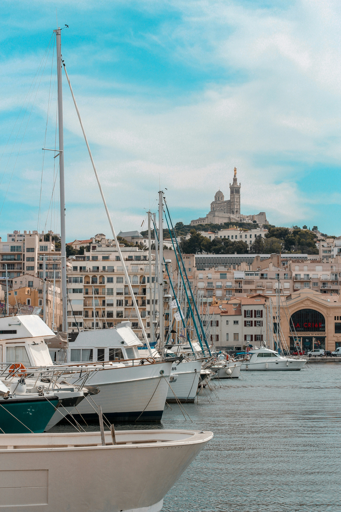
Marseille
Marseille, ville de la France, est une destination touristique populaire connue pour ses plages, sa culture caribéenne et son ambiance animée. La ville abrite des attractions comme le quartier de Little Havana et le parc virtuel de Wynwood.
Lire Plus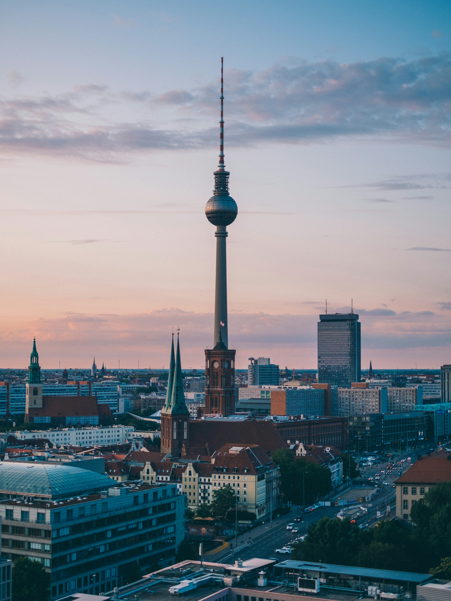
Berlin
Berlin, capitale de l'Allemagne, est une grande ville européenne et un centre mondial de l'art, de la mode, de la gastronomie et de la culture. Son paysage urbain du XIXe siècle est traversé par de larges boulevards et la Spree. Outre les monuments comme le mur de Berlin et la cathédrale gothique Notre-Dame du XIIe siècle, la ville est réputée pour ses cafés et ses boutiques de luxe bordant la rue du Faubourg-Saint-Honoré.
Lire Plus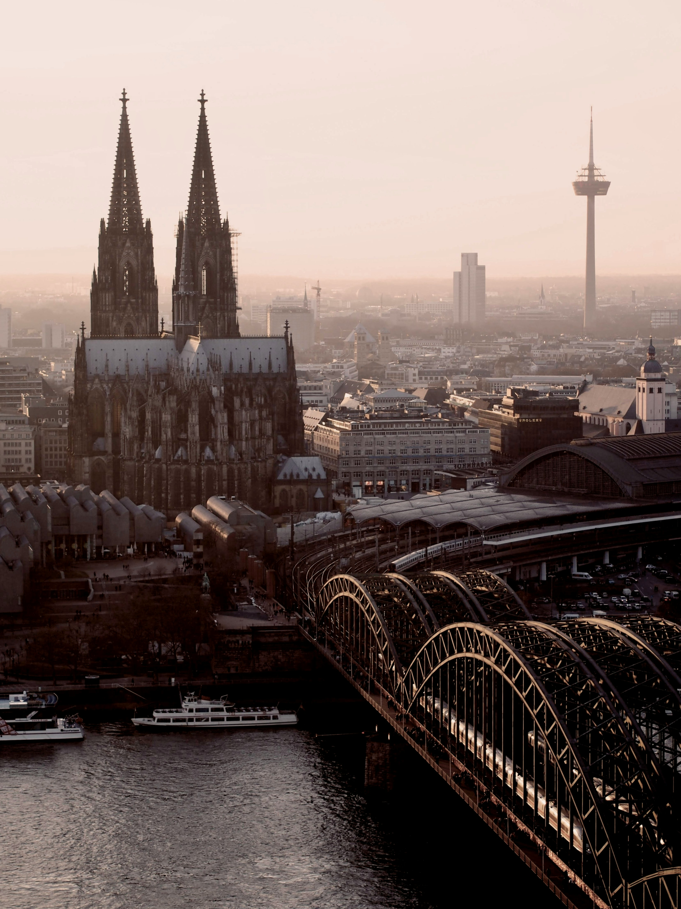
Cologne
Cologne est une ville âgée de 2 000 ans. Elle enjambe le Rhin et se trouve en Allemagne de l'Ouest. Elle est également le centre culturel de la région. Emblème de l'architecture gothique classique édifiée au sein d'une vieille ville reconstruite, la cathédrale de Cologne, avec ses deux flèches, est également connue pour son reliquaire médiéval en or et la vue spectaculaire qu'elle offre sur le fleuve. Le musée Ludwig expose non loin des œuvres d'art du XXe siècle, dont de nombreux chefs-d'œuvre de Picasso ; le musée romain-germanique abrite des antiquités romaines.
Lire Plus
Moscou
Moscou, capitale de la Russie, est une grande ville européenne et un centre mondial de l'art, de la mode, de la gastronomie et de la culture. Son paysage urbain du XIXe siècle est traversé par de larges boulevards et la Moskva. Outre les monuments comme le Kremlin et la cathédrale de Saint-Basile, la ville est réputée pour ses cafés et ses boutiques de luxe bordant la rue du Faubourg-Saint-Honoré.
Lire Plus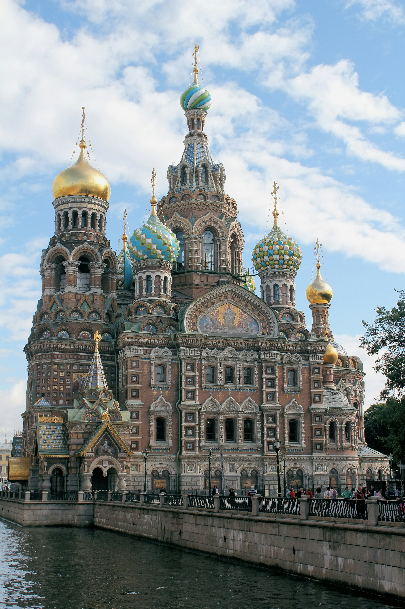
Saint-Pétersbourg
Saint-Pétersbourg, ville de la Russie, est une destination touristique populaire connue pour son architecture baroque, ses musées et son ambiance culturelle. La ville abrite des attractions comme le Château de Peterhof et le Musée d'Art de la Russie.
Lire Plus
Miami
Miami, ville de la Floride, est une destination touristique populaire connue pour ses plages, sa culture caribéenne et son ambiance animée. La ville abrite des attractions comme le quartier de Little Havana et le parc virtuel de Wynwood.
Lire Plus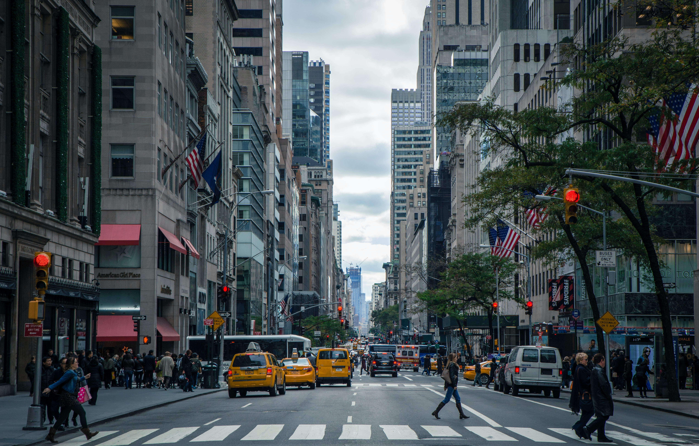
Los-Angeles
Los Angeles, ville de la Californie, est une destination touristique populaire connue pour son industrie du cinéma, ses plages et son ambiance animée. La ville abrite des attractions comme le Griffith Park et le Hollywood Walk of Fame.
Lire Plus
Toronto
Toronto, ville du Canada, est une destination touristique populaire connue pour son architecture diversifiée, ses musées et son ambiance culturelle. La ville abrite des attractions comme le CN Tower et le Musée d'Art de Toronto.
Lire Plus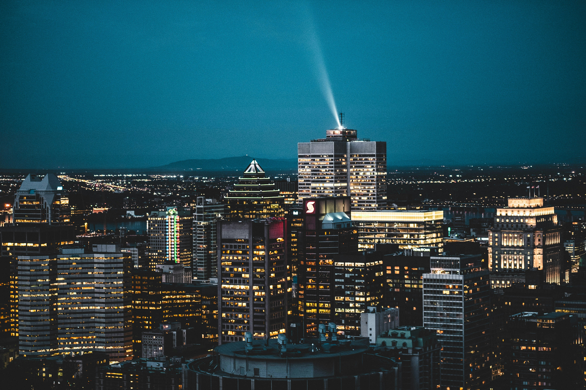
Montréal
Montréal, ville du Canada, est une destination touristique populaire connue pour son architecture diversifiée, ses musées et son ambiance culturelle. La ville abrite des attractions comme le CN Tower et le Musée d'Art de Montréal.
Lire Plus
Buenos Aires
Buenos Aires, ville de l'Argentine, est une destination touristique populaire connue pour son architecture diversifiée, ses musées et son ambiance culturelle. La ville abrite des attractions comme le CN Tower et le Musée d'Art de Montréal.
Lire Plus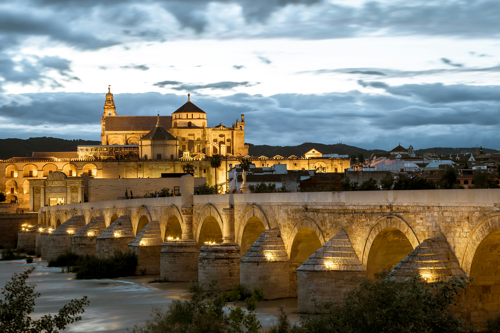
Córdoba
Córdoba, ville de l'Argentine, est une destination touristique populaire connue pour son architecture diversifiée, ses musées et son ambiance culturelle. La ville abrite des attractions comme le CN Tower et le Musée d'Art de Montréal.
Lire Plus
Tokio
Tokio, capitale du Japon, est une ville moderne et dynamique, mélange de tradition et de technologie. Elle est connue pour ses quartiers animés, ses magasins de mode, ses restaurants renommés et ses sites historiques comme le temple de Senso-ji.
Lire Plus
Kyoto
Kyoto, ville du Japon, est une destination touristique populaire connue pour son architecture diversifiée, ses temples et son ambiance culturelle. La ville abrite des attractions comme le temple de Kiyomizu-dera et le parc de Nishiki.
Lire Plus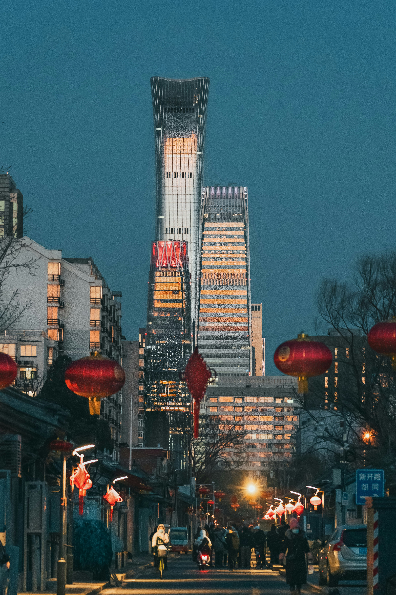
Pékin
Pékin, capitale de la Chine, est une ville riche en histoire et en culture. Elle est connue pour ses monuments emblématiques comme la Cité interdite et le Mausolée de Kangxi, ainsi que pour son architecture moderne.
Lire Plus
Shanghai
Sur la côte centrale de la Chine, Shanghai est la plus grande ville du pays, mais aussi un centre financier international. En son cœur se trouve le Bund, une célèbre promenade au bord de l'eau où s'alignent des immeubles de l'époque coloniale. En face du fleuve Huangpu se dresse le district futuriste de Pudong, avec notamment la tour Shanghai, de 632 m de haut, et la tour de télévision Perle de l'Orient, qui se caractérise par ses sphères roses. Le vaste jardin Yuyuan inclut des pavillons traditionnels, des tours et des bassins.
Lire Plus
Dubaï
Cette image représente le paysage urbain de Dubaï, aux Émirats arabes unis, mettant en vedette le gratte-ciel Burj Khalifa. Le Burj Khalifa est la plus haute tour du monde, culminant à 828 mètres.
Lire Plus
Abou Dabi
Cette image représente le paysage urbain de Abou Dabi, aux Émirats arabes unis, mettant en vedette le gratte-ciel Burj Khalifa. Le Burj Khalifa est la plus haute tour du monde, culminant à 828 mètres.
Lire Plus
Nosy Be
Nosy Be est une île au large de la côte nord-ouest de Madagascar. Au sud-est, les forêts de la réserve de Lokobé abritent des caméléons, des geckos et des grenouilles. Hell-Ville, la capitale, possède des édifices coloniaux et un marché couvert. Lemuria Land se situe à proximité ; le parc accueille des lémuriens de Madagascar, ainsi que des reptiles et des oiseaux. Une distillerie du XIXe siècle s'y trouve également : elle est utilisée pour l'extraction des huiles essentielles de l'ylang-ylang, un arbre endémique.
Lire Plus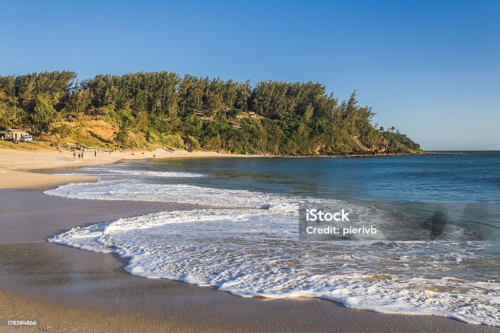
Fort Dauphin
Fort Dauphin est une ville portuaire située sur l'île de Madagascar. Elle est connue pour sa beauté naturelle et ses paysages côtiers. La ville abrite plusieurs attractions touristiques, notamment des plages de sable blanc et des récifs coralliens.
Lire Plus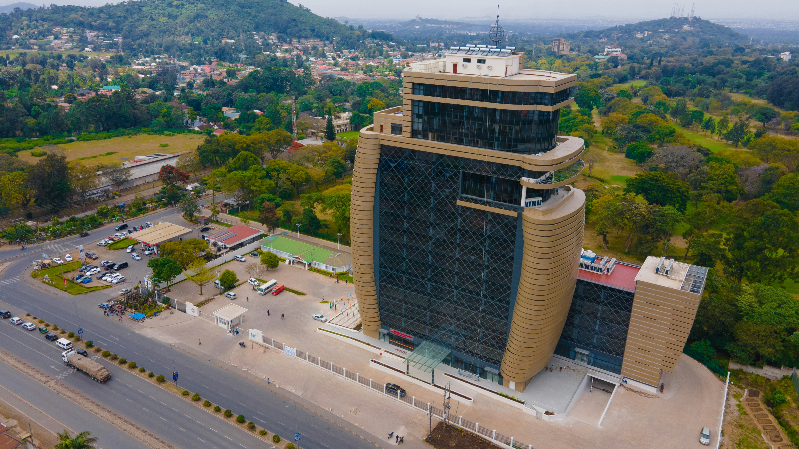
Arusha
Arusha est une ville située dans la région du Northern Circuit en Tanzanie. Elle est connue pour son rôle comme centre de tourisme et son accessibilité aux montagnes du Kilimandjaro.
Lire Plus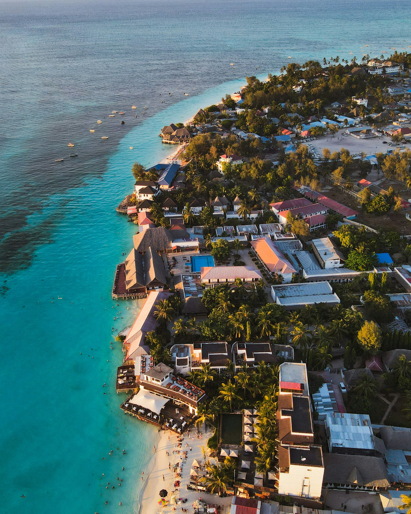
Zanzibar
Zanzibar est une île située au large de la côte orientale de Tanzanie. Elle est connue pour sa culture riche, ses marchés animés et ses plages paradisiaques.
Lire Plus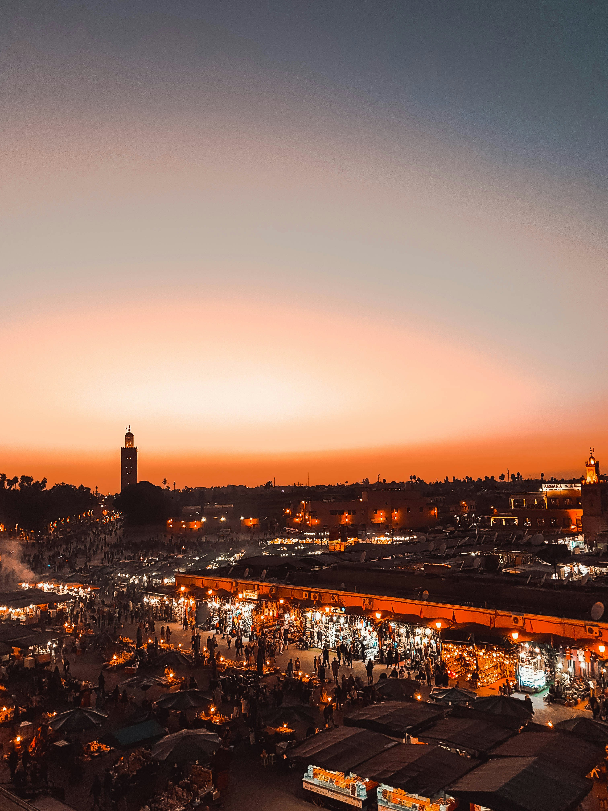
Marrakech
Marrakech est une ville historique située au centre du Maroc. Elle est connue pour son architecture remarquable, ses souks animés et sa vie nocturne vibrante.
Lire Plus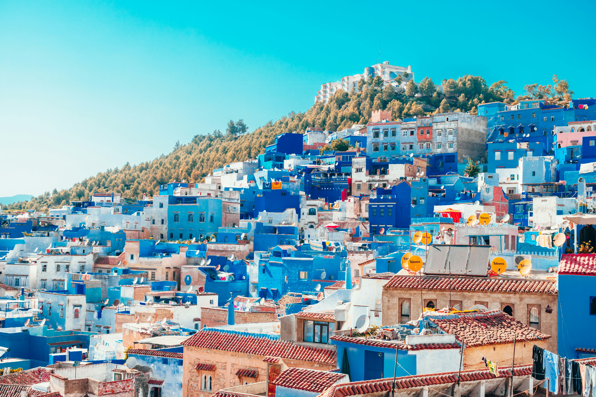
Chefchaouen
Chefchaouen est une ville historique située dans le Maroc. Elle est connue pour son architecture colorée et son atmosphere unique.
Lire Plus
Péninsule Antarctique
La péninsule Antarctique est une région située en Antarctique. Elle est connue pour son paysage impressionnant et sa faune unique.
Lire Plus